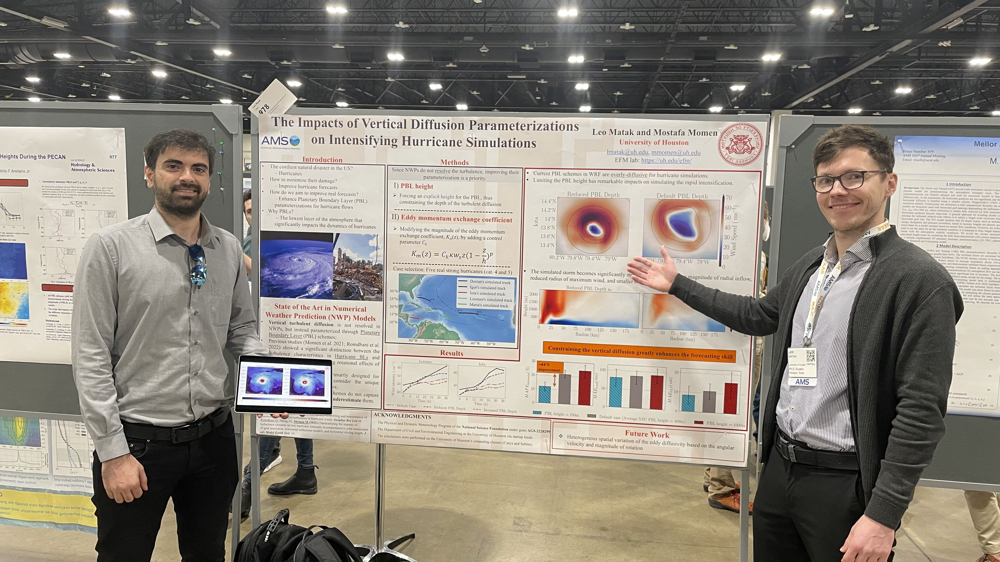
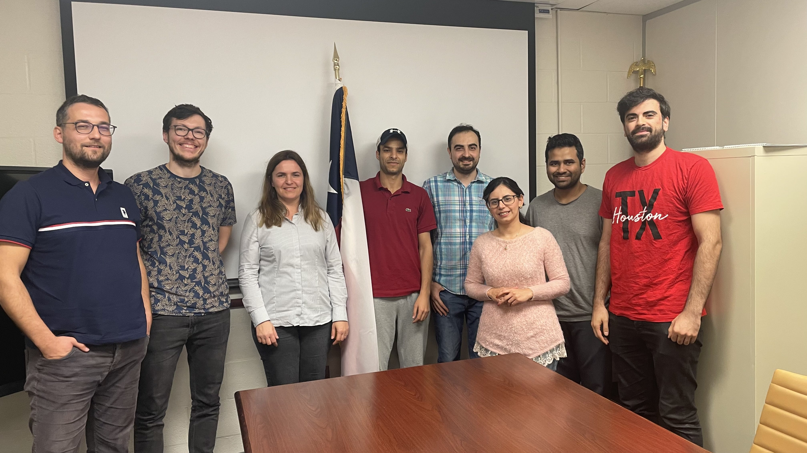

A little bit of everything!
In January 2023, for the first time in my Academic Career I had the opportunity to go to a Conference! It was the American Meteorological Society 102nd Annual Meeting. And the conference we were attending was the 24th symposium on Boundary Layers. Below, you can see me next to my poster. Next to me is my dear colleague Milad. The poor guy stood there for the entire duration of poster session while holding the tablet so that I could show intensification animation at the right time. I heartfully thank him!

Probably the most important event that happened in January 2023 was me passing the Ph.D. qualifying exam! After that major step, I can now be called Ph.D. Candidate!! Only few days after this wonderful achievement was my birthday! So I will also use this opportunity to show off my very nice friends whom I've met during my PhD journey!

In December 2022 my previous Academic Advisor, Dr. Karolina Krajcek-Nikolic, came to Houston, TX, to meet me and my new advisor Dr. Mostafa Momen. On the photo below you can see my whole research group, along with two advisors, and two very special guests. One is my beloved partner Andrea (taking the photo), the other is mr. Dario Krajcek! It was such a nice experience!
